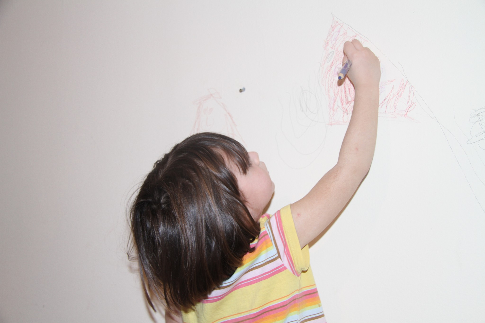
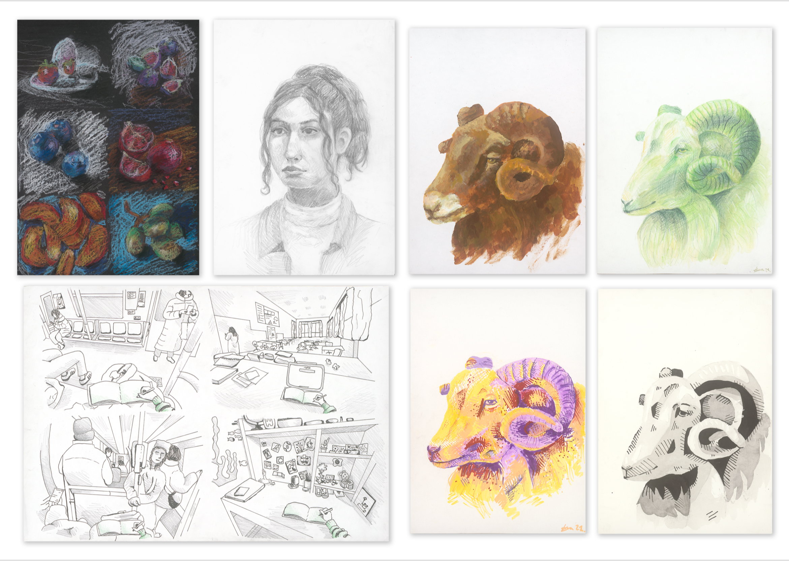
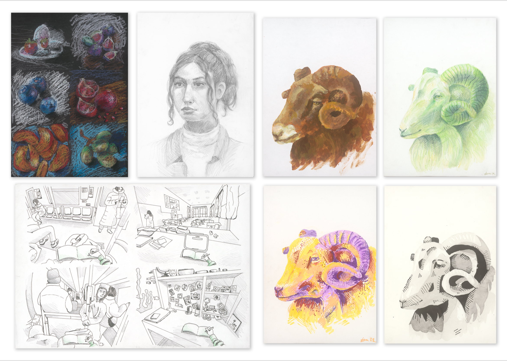
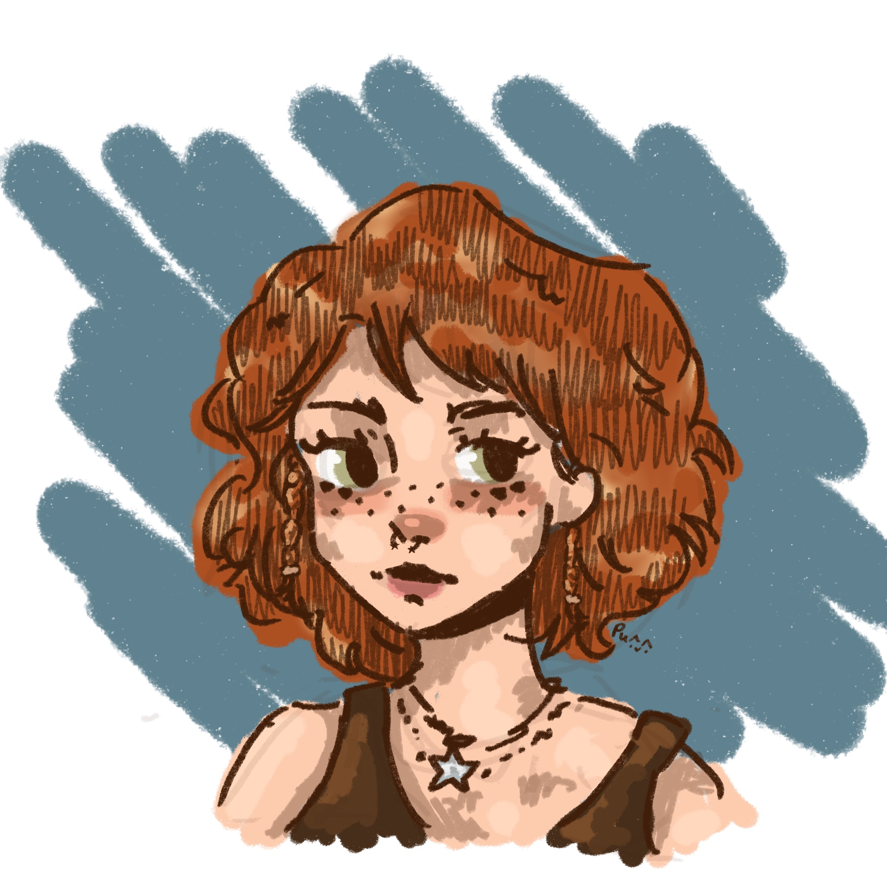
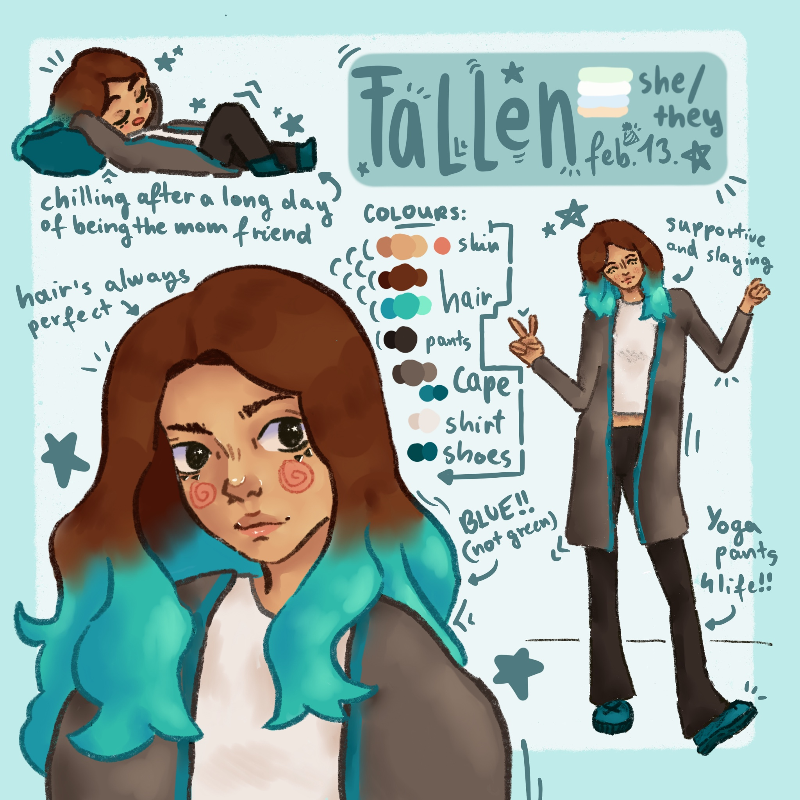

Alkotás
Kiskorom óta nagyon szeretek alkotni.
Úgy tervezem, ha nagy leszek, designer grafikus leszek. Idén felvételiztem a Kisképző grafika szakára, ahova fel is vettek. Azonban nem megyek át, mivel csak azért felvételiztem, hogy megtudjam, milyen is egy rajz felvételi, így amikor majd egy nagyobb rajz egyetemre felvételizek, tudom, milyen lesz.
Sok év alatt sok rajzeszközt kipróbáltam. Jelenleg a kedvencem a grafitceruza és a filctoll. De szeretek fotózni és kollázsokat is csinálni.
GALÉRIA
A portfólió, amivel behívtak/felvettek a Kisképzőbe.

 

A két kedvenc digitális rajzom. Az egyik a barátnőm kérésére, a másik pedig egy fanart, az egyik kedvenc content createremről. (Ezt a rajzomat egy darabig profilképnek használta!)
 